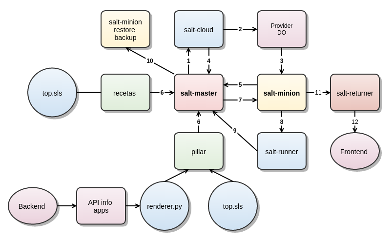

00:00:00
Saltstack
APSL
Notes
Saltstack · Noviembre 2014 · apsl.net · @eduherraiz

Presentación
- Edu Herraiz
- http://www.eduherraiz.com
- @eduherraiz
- Administrando sistemas GNU/linux y desarrollando web
- http://talks.apsl.net/saltstack
- Hecha con landslide
- Código en github
- Gráfico final con Gliffy
Notes
Saltstack · Noviembre 2014 · apsl.net · @eduherraiz
Agenda
- Problemática en la administración de sistemas
- Gestores de configuración
- Saltstack
- Caso de uso
Notes
Saltstack · Noviembre 2014 · apsl.net · @eduherraiz
Problemática en la administración de sistemas
Notes
Saltstack · Noviembre 2014 · apsl.net · @eduherraiz
Problemática en la administración de sistemas
- Conseguir el hardware
- Instalación del sistema operativo
- Instalación de servicios y aplicaciones
- Múltiples entornos
- Mantenimiento
- Actualizaciones
- Seguridad y control de usuarios
Notes
Saltstack · Noviembre 2014 · apsl.net · @eduherraiz
Y todo para ayer!
Notes
Saltstack · Noviembre 2014 · apsl.net · @eduherraiz
Mejoras históricas
- Virtualización
- Servicios en la nube
- Frameworks
- Sistemas gestores de paquetes
- dpkg, yum, pip
Notes
Saltstack · Noviembre 2014 · apsl.net · @eduherraiz
Pero aún así es poco practicable
- Muchas aplicaciones
- Muchos entornos
- Muchos servicios
- Muchos servidores
- Y acelerando!
Notes
Saltstack · Noviembre 2014 · apsl.net · @eduherraiz
Gestores de configuración
Notes
Saltstack · Noviembre 2014 · apsl.net · @eduherraiz
Gestores de configuración
- Lenguaje declarativo para especificar como debería estar (recetas)
- Recetas que el gestor aplica a los servidores con definiciones simples
- Instalación de paquetes
- Usuarios
- Ficheros (con plantillas)
- Permisos
- Crons
- Comandos
- Servicios
- Dependencias entre definiciones
Notes
Saltstack · Noviembre 2014 · apsl.net · @eduherraiz
Ventajas de los gestores de configuración
- Menor tiempo de puesta en marcha para arquitectura ya desarrollada
- Entornos replicables y coherentes
- Igualdad entre desarrollo, pruebas y producción
- Contingencia
- Evolución de arquitectura aprovechable por arquitectura antigua
- Las recetas se comparten entre arquitecturas de proyectos
- Existen recetarios públicos aprovechables
- Arquitectura como código
- Versionado de configuración mediante repositorio
- Documentación de bajo nivel innecesaria
- Trivializando operaciones
Notes
Saltstack · Noviembre 2014 · apsl.net · @eduherraiz
Opciones de gestores de configuración
- Muchos sistemas de configuración de código abierto
- Más utilizados
Notes
Saltstack · Noviembre 2014 · apsl.net · @eduherraiz
Puppet
- Ruby
- Desde 2005
- Cliente - servidor (puppet-master), por tcp
- El cliente pide al servidor que se quiere reconfigurar
- El cliente recoje cada x minutos recetas y las aplica
- Ejecución manual del cliente
- Orquestación con Mcollective
- Muy robusto, aunque desarrollar módulos propios no es sencillo
- Muy buenas recetas ya hechas
- Presentación propia sobre puppet
Notes
Saltstack · Noviembre 2014 · apsl.net · @eduherraiz
Chef
- Ruby
- Desde 2009
- Cliente - servidor
- Muy usado por grandes
- AWS opwsworks
- Introducción
- ¿Software Libre?
Notes
Saltstack · Noviembre 2014 · apsl.net · @eduherraiz
Ansible
- Python
- Desde 2012
- Conexión del servidor a los clientes vía ssh, sin agente
- Más simple
- Se crean recetas multi-host que se aplican con un archivo único de configuración
- Ejemplo de mongodb
Notes
Saltstack · Noviembre 2014 · apsl.net · @eduherraiz
Salstack
Notes
Saltstack · Noviembre 2014 · apsl.net · @eduherraiz
¿Porqué Saltstack?
- No solo configuración, apunta a ser una solución completa
- Orquestación, aprovisionamiento, ...
- Eficiencia
- Pythónico a todos los niveles
- Escrito en python
- Recetas en formato de definición YAML
- Plantillas en formato jinja
- Módulos propios asequibles
- Software libre y desarrollándose rápido
- Una empresa a tiempo completo detrás
- Mucha comunidad
Notes
Saltstack · Noviembre 2014 · apsl.net · @eduherraiz
Arquitectura
- Cliente (salt-minion) - servidor multi-maestro (salt-master)
- Utiliza un sistema de mensajería llamado RAET desarrollado por ellos
- Antes ZeroMQ, pero tenía problemas de escalabilidad
- El minion consume la cola de mensajes, sin puertos abiertos
- Periodicamente cada 5 segundos (configurable)
- Conexión cifrada, requiere validar la key del cliente en el servidor
- Minion independiente, permite reconfiguración sin servidor
Notes
Saltstack · Noviembre 2014 · apsl.net · @eduherraiz
Conceptos básicos
- Receta
- Estado
- Módulo
- Asociación de minions con recetas
- Datos
- Grains
- Pillar
Notes
Saltstack · Noviembre 2014 · apsl.net · @eduherraiz
Receta
- Archivo YAML con la de definición de estados
- Puedes discriminar en la receta según datos (grains o pillar)
Ejemplo
# /srv/salt/mimysql.sls
mysql-server:
pkg:
- installed
service.running:
- name: mysql
- reload: True
- require:
- pkg: mysql-server
- watch:
- file: /etc/mysql/conf.d/default.cnf
{% if pillar['administrado'] == 'apsl' %}
edu:
mysql_user.present:
- host: localhost
- password: apsl
{% endif %}
Notes
Saltstack · Noviembre 2014 · apsl.net · @eduherraiz
Estado
- Código python que representa una entidad
- Opera con uno o varios modulos de ejecución
- Lógica intermodular: discriminación de SO, versiones de servicio, ...
- Muchos estados de serie
- Facilidad de hacer uno propio
- Ejemplo
Notes
Saltstack · Noviembre 2014 · apsl.net · @eduherraiz
Módulo
- Código python con funcionalidad que opera con el sistema
- Muchos módulos de serie
- Facilidad de hacer uno propio
- Ejemplo
Notes
Saltstack · Noviembre 2014 · apsl.net · @eduherraiz
Asociación de minions con recetas
- Se hace mediante un archivo de definición top.sls
Ejemplo
# /srv/salt/top.sls
base:
'edu.apsl.net':
- utils
'web.*':
- nginx
'db?.apsl.net':
- mysql
- redis
# /srv/salt/postgresql/init.sls
- postgresql
# /srv/salt/postgresql/configure.sls
- postgresql.configure
Notes
Saltstack · Noviembre 2014 · apsl.net · @eduherraiz
Datos, grains
- Datos de sistema que se guardan al iniciar el minion
- Sistema operativo
- Versiones
- Información de hardware: MAC, IP's
- Puedes guardar tus datos estáticos que no se modifiquen
- Desde /etc/salt/minion
Notes
Saltstack · Noviembre 2014 · apsl.net · @eduherraiz
Datos, pillar
- Diccionario de datos propios
- Archivos de definición YAML
- Para pasar datos especificos de servicio o aplicación
- Reaprovechar recetas
- Ruta de los archivos por defecto: /srv/pillar
- Asociar datos con hosts
- Idem que con recetas: /srv/pillar/top.sls
Notes
Saltstack · Noviembre 2014 · apsl.net · @eduherraiz
Utilidades integradas
- Saltstack se complementa con una serie de utilidades
- salt-renderer
- salt-returner
- salt-runner
- salt-cloud
- salt-formulas
- Peer communication
Notes
Saltstack · Noviembre 2014 · apsl.net · @eduherraiz
salt-renderer
- Generar los diccionarios de definición de otra manera que no sea yml
- Independiente de donde. En top.sls, recetas o pillar.
- Varios renderers para escoger: plantillas jinja, mako, python
- En el archivo de definición lo marcamos con la primera linea (shebang)
- Ejemplo
- Lo utilizamos para traer datos de aplicaciones desde nuestro backend
Notes
Saltstack · Noviembre 2014 · apsl.net · @eduherraiz
salt-returner
- Por defecto los valores devueltos por los comandos salt son devueltos al master
- Recoger los resultados devueltos de las configuraciones para tratarlos o almacenarlos
- Útil para un frontend propio de estadísticas
- http://docs.saltstack.com/en/latest/ref/returners/
Notes
Saltstack · Noviembre 2014 · apsl.net · @eduherraiz
salt-runner
- Código python similar a un módulo
- Pero se ejecuta siempre en el salt-master
- Disponibles runners propios de salt
- Interesante para orquestar ejecución en diferentes hosts
Ejemplo
# Import salt modules
import salt.client
def up():
'''
Print a list of all of the minions that are up
'''
client = salt.client.LocalClient(__opts__['conf_file'])
minions = client.cmd('*', 'test.ping', timeout=1)
for minion in sorted(minions):
print minion
Notes
Saltstack · Noviembre 2014 · apsl.net · @eduherraiz
Ejecución ejemplo
# salt-run test.up
acan.sandosmx.com
agenda500-db.dov.apsl.net
agenda500-worker.dov.apsl.net
arqueobcn-db.dov.apsl.net
arqueobcn-worker.dov.apsl.net
bb02.v5tech.es
bb03.v5tech.es
bb04.v5tech.es
...
Notes
Saltstack · Noviembre 2014 · apsl.net · @eduherraiz
salt-cloud
- Utilidad para provisionar máquinas virtuales
- Independiente de proveedor
- Digital Ocean
- AWS
- Linode
- Openstack
- Tras el despliegue
- Instala el minion
- Se configura
- Se da de alta en el master
Notes
Saltstack · Noviembre 2014 · apsl.net · @eduherraiz
salt-formulas
- Recetas compartidas comunitariamente
- Información oficial de instalación
- Permite GitFs desde archivo de config o copiando a disco
- Hay muchas preparadas
- Ejemplo
- Solo configuras mediante pillar
Notes
Saltstack · Noviembre 2014 · apsl.net · @eduherraiz
Peer communication
- Permite desde un minion ejecutar modulos en otro minion
- Se definen permisos en /etc/salt/master
- Desde un estado
- Utilizando el modulo publish
- Más Información
Notes
Saltstack · Noviembre 2014 · apsl.net · @eduherraiz
Instalación
- Paquete de sistema o vía pip
- Ruta de trabajo: /srv/salt
- Configuración
- /etc/salt/master
- /etc/salt/minion
- Los minions deben tener configurado el host del salt-master
- Por defecto host: salt
Notes
Saltstack · Noviembre 2014 · apsl.net · @eduherraiz
Script de instalación del minion
#!/bin/bash
## Script inicial para lanzar en un servidor nuevo
# Actualiza a ultima version de sistema
# Configura salt
sudo apt-get update
sudo apt-get -y dist-upgrade
# Instalamos y configuramos el salt-minion con el host master salt.apsl.net
echo deb http://ppa.launchpad.net/saltstack/salt/ubuntu `lsb_release -sc` main \
| sudo tee /etc/apt/sources.list.d/saltstack.list
wget -q -O- "http://keyserver.ubuntu.com:11371/pks/lookup?op=get&search=0x4759FA960E27C0A6" \
| sudo apt-key add -
sudo apt-get update
sudo apt-get install -y salt-minion
sudo sed -i 's/\#master\:\ salt/master\:\ salt\.apsl\.net/' /etc/salt/minion
sudo service salt-minion restart
sudo apt-get autoremove
Notes
Saltstack · Noviembre 2014 · apsl.net · @eduherraiz
Operativa
- salt-key -L
- Listar los minions asociados y por asociar
- salt-key -a host
- Asociar un minion que está pendiente
- salt-key -d host
- Desasociar un minion que está pendiente
- salt mihost state.sls mireceta
- Aplicar la receta mireceta.sls a mihost
- salt mihost state.highstate
- Sincroniza todo custom modules|states, pillar, recetas
- Aplica recetas del top.sls asociadas a mihost
Notes
Saltstack · Noviembre 2014 · apsl.net · @eduherraiz
Operativa
- salt -v mihost comando
- Para incremetar el verbose del comando
- salt -l debug mihost comando
- Información de debug al ejecutar el comando
- salt mihost pillar.items
- Listar los pillars asociados al host
- salt mihost grains.items
- Listar los grains
Notes
Saltstack · Noviembre 2014 · apsl.net · @eduherraiz
Caso de uso
Notes
Saltstack · Noviembre 2014 · apsl.net · @eduherraiz
Caso de uso

Notes
Saltstack · Noviembre 2014 · apsl.net · @eduherraiz
Salteando
- Muchas horas de preparación para hacer todo eso con un comando
- Pero a partir de ahí la vida puede ser maravillosa
- http://xkcd.com/303/

Notes
Saltstack · Noviembre 2014 · apsl.net · @eduherraiz
Notes
Saltstack · Noviembre 2014 · apsl.net · @eduherraiz